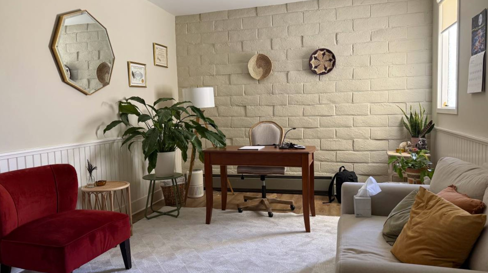

Monterey, CA & Telehealth Statewide
Psychiatric care that actually meets you where you are
Expert, compassionate psychiatry for children, teens, and adults — with shorter wait times, longer appointments, and a provider who truly listens.

Areas of Expertise
Specialized care for the conditions that matter most
We treat a focused range of conditions with deep expertise — so you get care from a provider who truly knows your situation, not a generalist stretched thin.
ADHD
Comprehensive evaluation and treatment for children, teens, and adults. Evidence-based medication management plus practical strategies that work in real life.
Anxiety & Depression
From generalized anxiety and panic to major depression and mood disorders — individualized care that goes beyond the prescription pad.
Child & Adolescent Psychiatry
One of few providers in the Monterey Bay area dual-certified in both pediatric and psychiatric care. Accepting patients as young as age 5.
Trauma & PTSD
Experienced working with trauma survivors, including victims of crime and complex PTSD. A safe, non-judgmental space to begin healing.
Perinatal Mental Health
Specialized care for pregnancy and postpartum anxiety and depression. You deserve support during one of life's most demanding transitions.
College Students & Professionals
Flexible telehealth scheduling built around your life. For the CSUMB student, the burned-out professional, and everyone navigating high-pressure demands.
Why Monterey Bay Psychiatry
A different kind of
psychiatric practice
Mental health care in Monterey County is in short supply. Most patients wait months just to be seen. We built this practice to change that — shorter waits, unhurried appointments, and a provider who brings rare dual expertise to every patient relationship.
- New patients typically seen within 1–2 weeks
- Dual-certified in both pediatric and psychiatric nursing — rare in any region
- Longer, unhurried appointments — more time with you, not less
- Integrative, whole-person care — not just medication management
- Telehealth available throughout all of California
- In-person visits available in Monterey, CA
- Warm, calming demeanor — patients and families feel heard

Getting Started
Simple from day one
Getting psychiatric care shouldn't be complicated. Here's exactly how it works.
Reach Out
Complete our brief intake inquiry form or send us an email. We'll respond within one business day.
Get Scheduled
We'll find a time that works — typically within 1–2 weeks. Telehealth or in-person in Monterey.
Your Evaluation
A thorough, unhurried initial appointment. No rushing. We take the time to truly understand your situation.
Your Care Plan
A personalized treatment plan built with you — not handed to you. Ongoing support as you move forward.
Ready to get started?
We're accepting new patients now. Reach out today — appointments typically available within 1–2 weeks.